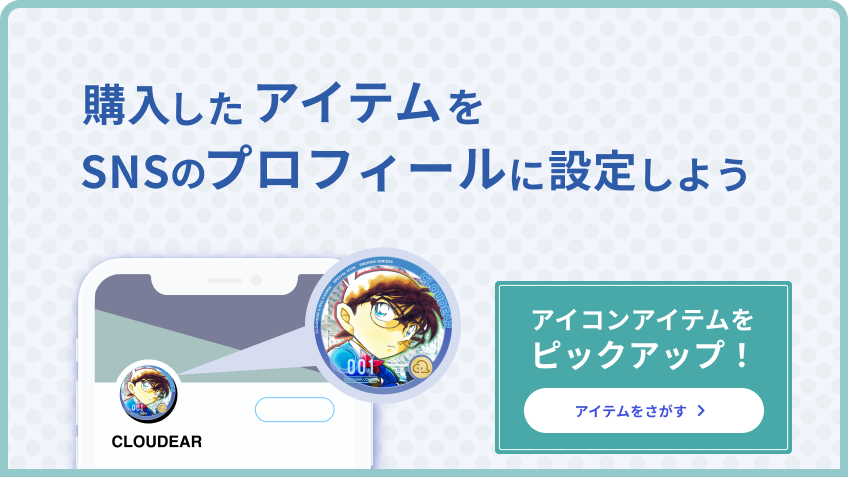

バナー
2022年1月 - 2023年1月
企画提案提案資料、営業資料、サイトモックアップ用のバナー。 全て提案段階のものなので世に出ていません。作業時間はそれぞれ一日〜一日半。
担当
バナー制作
①SPY×FAMILY
「キャラクターへお祝いを送ると、お祝いをした証明がもらえる」という企画の提案用バナー。
人生初制作バナー。
SPY×FAMILYの世界観を大事に、背景にダイヤモンド（アーガイル）柄や斜めの帯を入れた。
＜反省＞
クラッカーの画像が他の画像とは違うテイストで浮いている。フラッグガーランドが装飾のつもりだったが背景と化している。リボンの作りが角の作りも雑で単調。商品画像を画面外に大胆にはみ出す構図でもよかった。など改善できる点が多い。
②ぷにるはかわいいスライム

「単行本の特装版に、缶バッジセット（リアル商品）とデジタルぷにるアクスタ（デジタルコレクティブ）が付録する」という商品の提案資料用バナー。
当時単行本が一冊も出ておらず、世に出ている画像も少なかったので作品の雰囲気が掴みづらく苦戦した。
コロコロ作品であることやロゴの雰囲気からポップで明るい色合いにした（実際にはもっとホワイトで落ち着いたトーンだった）。
＜反省＞
他のバナーを真似しながら作ったものだが、見やすく分かりやすいものが作れた。
背景のピンク色の帯の中のドット柄の切れ目や、缶バッジ画像の処理など、甘い部分はある。。
③蟲愛づる姫君の結婚
「メンバーシップに加入すると、①作家からの特別コンテンツ、②Discord等コミュニティ参加権、③加入者限定のSNS用アイコンが得られる」という商品の提案用バナー。
この作品も当時コミカライズの単行本が一冊しか出ておらず雰囲気が掴みづらかったが、中華後宮ファンタジーなので格子柄や金運を使用し雰囲気を想像した。
＜反省＞
ぷにるの反省を活かし商品画像の下にシャドウを入れるなど、奥行き感のある表現を目指した。
④モックアップ用

サイトのモックアップを取引先に見せるにあたり、運用されたときの見え方に近づけるため作成したバナー。
作品を使用したものではないので、サイトのトンマナに合わせて寒色系の色味に統一した。